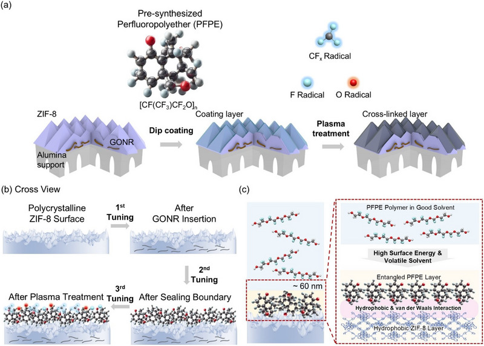

Overview
This gas separation study tunes hydrogen-selective zeolitic imidazolate framework-8 (ZIF-8) membranes by combining graphene oxide nanoribbon confinement, an ultrathin dip-coated perfluoropolyether (PFPE) sealing layer and reactive ion plasma treatment; the work involved researchers from the Department of Chemical and Biomolecular Engineering at Yonsei University, Konkuk University and Soongsil University and was co-authored by Jungmok Seo of the School of Electrical and Electronic Engineering, Yonsei University, who leads the BLISS Lab. The sealed membrane showed an H2 permeance of 1.3 × 10−6 mol m−2·Pa·s with an ideal H2/N2 selectivity of 209, and plasma treatment raised the ideal H2/CH4 selectivity to 1218.
Background
Metal-organic framework (MOF) membranes are studied for purifying hydrogen because their crystalline pores can sieve molecules, and hydrogen (about 2.9 Å kinetic diameter) can be separated from larger gases if the aperture is held between 3 and 3.4 Å. ZIF-8 has a 3.4 Å aperture that flexes to 4.0 Å, and adding nanoribbons rigidifies the framework without placing bulky groups in the channels. In polycrystalline membranes, however, gaps between grains act as non-selective pathways for larger molecules, and sealing them with polymers such as PMMA or PDMS also sharply reduces hydrogen permeance.
Design and approach
The membrane is tuned in three stages from the same ZIF-8 material. ZIF-8 is grown hydrothermally on alumina supports coated with graphene oxide nanoribbons (GONRs), which interact with zinc ions and rigidify the aperture at 3.4 Å. The membrane is then dipped in a volatile solvent containing pre-synthesized PFPE (Lynksolution A1 from Lynk Solutec, about 5% PFPE, diluted 1:1) to form an ultrathin layer that seals the grain boundaries (S_ZIF-8). Finally, O2/CF4 reactive ion plasma is applied briefly (SPX_ZIF-8, with X denoting the treatment time); the authors attribute the effect to etching of excess polymer and introduction of additional fluorine groups, which densify the layer and lower methane solubility. Depending on the target gas pair, the sealing step alone or sealing plus plasma can be selected.

Overview of ZIF gas-separation membrane design using GONR layers, PFPE sealing and plasma treatment; not evidence of biological performance.
Eunji Choi, Seungho Yu, Taehwan Kim et al. “Gas‐Specific and Tunable Hydrogen‐Selective ZIF Membrane through Combined Physical Confinement and Sealing Techniques”. Figure 1. DOI: 10.1002/smll.202501590. CC BY-NC-ND 4.0. Figure content is unchanged.
Source figure and caption ↗ · DOI: 10.1002/smll.202501590 ↗ · CC BY-NC-ND 4.0 ↗
Noncommercial academic use with attribution and the license link; keep the original figure unchanged. Cropping, translation overlays and annotations are not included.
How it was evaluated
Grain size was varied by thermally treating the nanoribbons at 200 °C and 300 °C before ZIF-8 growth, and its effect on single-gas permeance was measured. Sealed and plasma-treated membranes were characterized by scanning electron microscopy, water contact angle, X-ray photoelectron spectroscopy (XPS) and X-ray diffraction (XRD), and tested with H2, CO2, N2, CH4, C3H6 and C3H8. Mixed-gas separation was measured at 25 °C and 1 bar for H2:N2 = 3:1, representing ammonia cracking, H2:CH4 = 15:85, representing hydrogen pipelines, and N2/CH4. Molecular dynamics simulations compared gas diffusion in bulk ZIF-8 with models containing artificial grain boundary gaps (Gap 0, 3, 5 and 8 Å).
Key results
The average grain size was about 250 nm for bare ZIF-8, about 700 nm for ZIF-8/GONR and ZIF-8/GNR (300), with particle density falling from 12 to 2 counts µm−2, and about 400 nm for ZIF-8/GNR (200). Ideal H2/N2 selectivity followed the grain size trend, with smaller grain boundary areas giving higher selectivity, and ZIF-8/GONR was therefore chosen for sealing.
The PFPE layer was described as limited to below 60 nm by chain entanglement and measured at about 65 nm. Sealing raised the ideal selectivity from 180 to 209 for H2/N2, from 557 to 945 for H2/CH4 and from 3 to 4.5 for N2/CH4, and plasma treatment further raised H2/CH4 from 945 to 1218 and N2/CH4 from 4.5 to 6.5. After plasma treatment, methane permeance fell below that of propylene and propane, and the same trend appeared for plasma-treated polymer on a PCTE membrane with 20 nm pores. The authors reported a permeance loss of about 10% for their sealing method, compared with 15% to 97% for previously reported methods. With the sealing layer, ZIF-8 crystallinity was preserved after 20 to 60 s of plasma, whereas unsealed ZIF-8 lost XRD intensity.
In the 3:1 H2/N2 mixture, the S_ZIF-8 membrane gave an H2 permeance of about 1 × 10−7 mol m−2·Pa·s, lower than the 1.3 × 10−6 mol m−2·Pa·s in single-gas tests, a separation factor of 115 and a hydrogen purity of about 99.6%. In the 15:85 H2/CH4 mixture, the SP20_ZIF-8 membrane gave permeances of 1.3 × 10−7 (H2) and 3.1 × 10−10 (CH4) mol m−2·Pa·s and a separation factor of about 430, and the authors reported that it separated about 98.3% of hydrogen impurities. For N2/CH4, the mixed-gas selectivity remained about 6, consistent with the ideal value.
In the simulations, nitrogen moved only through the grain boundary gaps, and its permeation rate increased sharply in the Gap 8 model. The ratio of hydrogen to nitrogen diffusion was 160 in bulk ZIF-8 but fell below 5 when grain boundaries were included, under the Knudsen selectivity of about 3.74, which the authors interpreted as grain boundary transport dominating over transport through the ZIF-8 pores.
Open questions
The authors noted that mixed-gas permeance was lower than single-gas permeance because of competitive adsorption and partial pore blocking by the sealing layer, and that plasma treatment time must be controlled because the underlying MOF layer can be removed within a few minutes even with the protective layer.
Related research
A MOF Glass Membrane for Gas Separation
The published abstract reports a ZIF-62 MOF glass membrane made by melt-quenching a polycrystalline ZIF-62 membrane on a porous alumina support, which eliminated intercrystalline defects. This study takes the opposite route for ZIF-8: the crystalline membrane is kept, and its grain boundaries are sealed with a dip-coated PFPE layer that can be further tuned by plasma treatment.
Abstract-based introductionRESEARCH NEWS
Research in the news
Sources used in this summary
This summary is based on the full text and figure legends of the open-access article (PMC12393018); the supporting information, including Tables S1–S5 and Figures S1–S13, was not reviewed, and the permeance units are reproduced as printed in the article (mol m−2·Pa·s).